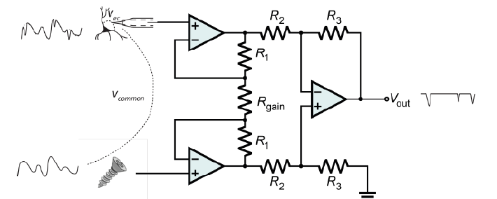
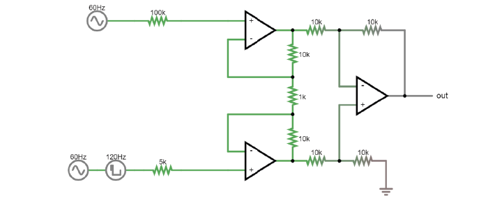

Amplifiers#
The operational amplifier is the most simple amplifier circuit. The operational amplifier has two inputs (+ and -), one output, and two power rails (e.g. a 3 and -3V power rail). The output of the amplifier is driven by the power rails, which means it can output a higher voltage than it receives.

To get the properties we need for ephys, we use differential or instrumentation amplifiers, which are composed of operational amplifiers in specific configurations. To understand the difference see our Extracellular ephys course materials, days 2 and 3 here.
In electrophysiology, amplifiers are used to:
Amplifier properties#
Amplifiers have high input impedance#
Amplifier input impedance, Zais very high. The circuit acts as though the current has to cross a very high resistor to actually enter the amplifier. The current flow therefore becomes very low (Ferree et al., 2001), preventing us from drawing much current from the electrode to ground.
Amplifiers have low output impedance#
The output impedance of amplifiers is very low, which means that a lot of current can flow from the amplifier. This current enables the driving of the signal through all the subsequent circuits (e.g., interconnect lines, multiplexer, and ADC). Because the output current is provided by a separate power supply, by placing an amplifier in our circuit we make sure that the rest of our recording circuit is driven by current provided by the amplifier, not by current provided by the electrode tip.
Amplifiers in the headstage prevent current being drawn#
A perfect 5V voltage source would always provide exactly 5 volts, no matter what the rest of the circuit looks like. If we put a lot of high impedance components in the rest of the circuit, less current will flow, and if we put low impedance components we will get a high current.
A real voltage source has a bit of output impedance, which means it acts as a voltage source in series with an impedance. This is modelled here (click to open a simulator):
That invisible, small series resistance creates a voltage divider. Though the actual source voltage is the same 5V, the apparent voltage of the source varies depending on the ratio between the output impedance of the source, and the impedance of the rest of the circuit. The lower the impedance of the components used in the rest of the circuit, the higher the relative influence of the source output impedance, and the lower the apparent source voltage (the voltage ‘droops’).
In an ephys acquisition system, the voltage source is the potential changes in the extracellular fluid (|Vec|). The resistive and capacitive properties of the electrode create an output resistance. The relative impedance of the circuit before and after |Vin| influences the magnitude of the signal at |Vin|. If we allow a lot of current to flow from our electrode to ground, we have a low impedance circuit, which will distort our signal. We therefore need something with a very high impedance to stop current being drawn from our |Vec|. Amplifiers do exactly this: their high input impedance prevents current flow from the electrodes, and their power supply provides the necessary current for the rest of the circuit from a separate source.
Differential amplifiers remove common noise#
Referencing#
We live in an (electrically) very noisy world. To get rid of some of this noise from our recording, we can use a reference, which can be another electrode in the brain or a screw in the animal’s skull. This choice is very important for the recording: the amplifier will output the difference between the recording electrode and the reference point. That means that the amplifier will do its best to get rid of any signal that the two share. If the recording electrode is picking up 50 Hz noise generated by the mains power supply in the walls, you want the amplifier to get rid of it, so it’s best to use a reference point that will also pick up this noise. However, if the reference is picking up signals that you are interested in, the amplifier will get rid of those too. To choose an appropriate reference, you have to decide what qualifies as noise in your experiment.
Instrumentation amplifiers#
An instrumentation amplifier circuit can compare the signal from a measurement and a reference electrode, and output the difference between the two. .. raw:: html
<br> <center><iframe width=”560” height=”340” src=”https://www.youtube.com/embed/uPcv0gBjqbA” title=”YouTube video player” frameborder=”0” allow=”accelerometer; autoplay; clipboard-write; encrypted-media; gyroscope; picture-in-picture” allowfullscreen></iframe></center> <br>
{kind=link}
The instrumentation |
Gain resistor#
The value with which the signal is amplified by the instrumentation amp (the gain) is set by the gain resistor. The voltages on either side of the gain resistor are fixed, because the op-amps are keeping them in place. If we have the same V and lower RGain, current must travel through the resistor, and therefore more current will flow through the feedback resistors of the two buffer op-amps. As those are fixed resistors, we now have a higher I for same R and therefore a higher voltage drop across these resistors. Both buffer op-amps now have to work harder to overcome this voltage drop and will output more extreme voltages. By decreasing the value of RGain, we are basically making the inputs to the final op-amp more different to each other, and therefore increasing the gain of the instrumentation amp.
Common mode rejection ratio (CMRR)#
Common mode noise is signal that is common to both inputs, and thus should be cancelled out by an ideal amplifier. A common way to model how well an amplifier subtracts one input to the other is the following: We define each input (+ and -) to be a sum of an individual voltage (V1 or V2) plus a voltage common to both. This common voltage (Vc) could be electrical noise or muscle activity we are not interested in and want to discard. In this case, the inputs would be:
(In some examples of a differential amplifier, V2 is ground 0V, which is a perfectly valid value). In an ideal differential amplifier, the output should be the difference of both amplified by a factor:
Where Ad is the differential gain, the factor by which the differential signal is amplified. Here, the unwanted, common signals cancel out and only the signal we are interested in is amplified.
A real amplifier, however, acts in a different way. As we’ve seen, small imperfections can lead to part of the common voltages being amplified as well. In this case, the output of a real amplifier ends up being:
In addition to the differential gain, a new term ‘Ac’, or common gain, appears. This amplifies the signal common to both inputs. Of course, we want an amplifier to have a differential gain as high as possible and a common gain as low as possible (ideally, Ac would be 0). The relation between these two gains tells us how good an amplifier is at amplifying only the differential signals. This is called the Common Mode Rejection Ratio, or CMRR, simply defined as
or
if measured in decibels.
The higher the CMRR, the better the amplifier is at cancelling out the signals common to both inputs. Instrumentation amplifiers are not completely immune to common input noise. They are real circuits and, as such, there are multiple ways for these common signals to bleed out into the output. They have, however, a very high CMRR.